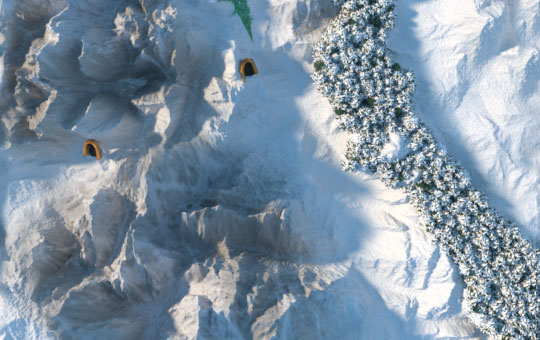
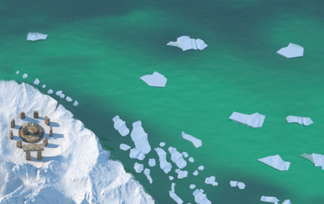
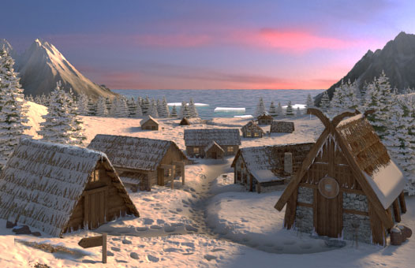
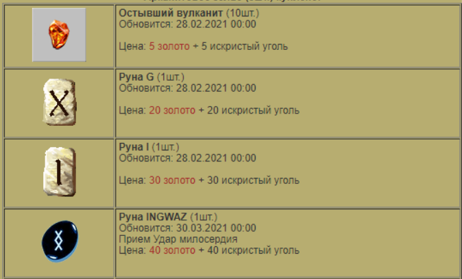
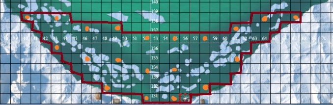
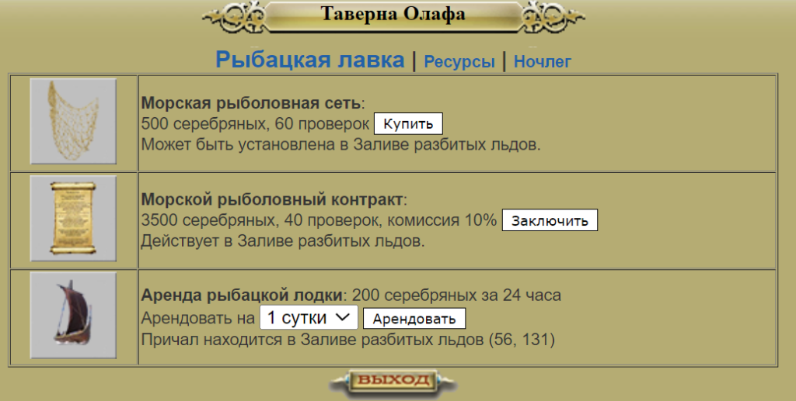
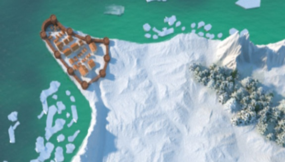

Это цикл статей, посвященный контенту в Северных землях – как пройти, что там есть, что, вероятно, будет и т.д.
Северные земли – контент для высокоуровневых персонажей, прошедших Шпиль Черной башни и Затерянную долину (по сюжетной линии игры), включающий новых монстров и особую механику переохлаждения от перемещения и от особых навыков монстров в бою.
- Как попасть в Северные земли. Снежная башня
- Особенности Северных земель. Локации и контент
- Разломы
- Квест Кровь на снегу.
- Квест Короткое замыкание
Особенности Северных земель. Локации и контент
Важные примечания
Итак, вы прошли Снежную башню, вышли на свежий воздух, рядом с сооружением, похожим на стоунхендж. На данном этапе уже можно сделать телепортацию в город – аватар окажется не на Центральной площади, а в деревне Восточная гавань (103, 137)

Если же вы не хотите телепортировать в деревню и не хотите изучать северные пространства, то для возвращения на теплую и уютную Центральную площадь необходимо вновь войти в Снежную башню (33, 141) и сделать телепорт оттуда – аватар окажется на Центральной площади.
В случае, если вы собираетесь прогуляться по Северным землям, необходимо знать несколько вещей:
- Во всех локациях есть переохлаждение – около 1% каждый шаг.
- 1 согрев стоит 4 бревна или 1 искристый уголь
- Можно погреться в деревне
- При поражении, аватар попадает в деревню Восточная гавань, а не на Центральную площадь.
- Задержка перехода значительная – около 1 минуты.
- Исследуя местность на предмет ресурсов, можно найти Акварит – ресурс, который будет использоваться для крафта сета Конунга и Дикой охоты.
- Шанс нападения монстров на севере невелик – около 10%. Монстры, которых можно встретить:
- Баньши
- Йети
- Берсерк (растущий урон)
- Много здоровья
- Ледяные охотники
- Лютоволки
- Нападают стаей
- Кастуют боевую гармонию перед атакой
- Скелеты-лучники
- На море
- Карнидон
- Морской демон
Рассмотрим локации и контент, который нас ждет на севере.
Локации и контент
Среди доступных локаций в Северных землях можно выделить следующие:
1) Восточная гавань (103, 137).
Северная “Центральная площадь”. Деревня с двумя активными домами. Здесь можно погреться от переохлаждения, закупить бревнами, сдать ресурсы в Постоялый двор и взять квест.

- Таверна Олафа
- Покупка Морских сетей, Морского контракта, аренда лодки
- Рынок ресурсов (как в Больших комарах)
- Постоялый двор (полная копия Постоялого двора Больших комаров, общее содержимое)
- Лавка Торвальда
- Можно взять квест Кровь на снегу
- После прохождения квеста Кровь на снегу открывается особый магазин, в котором можно купить полезные расходники
Магазин, который открывается после прохождения квеста Кровь на снегу, содержит в себе достаточно интересные и редкие расходники:
- Остывший вулканит x10: ~5 золота, ~5 искристого угля
- Обновляется раз в месяц
- Руна 2 типа: 20 золотых, 20 искристого угля
- Обновляется раз в месяц
- Руна 3 типа: 30 золотых, 30 искристого угля
- Обновляется раз в месяц
- Руна разлома: 40 золотых, 40 искристого угля
- Обновляется раз в 2 месяца
- Кислотные зелья x3: ~400 серебра, 5 искристого угля.
- Обновляется раз в неделю

Из особенностей магазина:
- Каждый тик обновления ассортимента изменяет цену – если игрок не купил конкретную позицию (например, Руну разлома), то цена на эту позицию снижается на 10%. Например, если 5 месяцев не покупать руну 3 типа, то её цена составит 15 золотых на начало 6-го месяца.
- Каждую позицию можно купить только 1 раз за период – после покупки, полка с расходником пустеет и обновляется согласно таймингам, описанным выше.
2) Морская гавань (56, 131). Рыбалка на море
Точка выхода в море на арендованной лодке. Площадь морской поверхности достаточно большая, поэтому можно разместить большое количество сетей (от 20 штук) без существенного штрафа по доходу.
Один из вариантов расстановки 20 сетей, предложенный аватаром Антерос. Приносит доход ~1200 серебра и 0-2 Акварита каждые ~2 дня.


Каждый месяц на сети совершают нападение морские чудища, о чем вам любезно сообщат моряки по почте. Атакованные сети приносят околонулевой улов, поэтому стоит выйти в открытое море и дать бой ворам рыбы – после победы над морскими монстрами улов вернется.
3) Титанитовая шахта (144, 132)
Самая глубокая шахта в игре (точное количество уровней неизвестно). Есть переохлаждение.
Выпадающие ресурсы (примерный доход здесь):
- Алмаз
- Корунд
- Искристый уголь
- Титанитовая руда
Вероятно, что на нижних этажах шахты есть Титанитовые заготовки для крафта сетов Конунга и Дикой охоты.
Помимо описанных выше локаций, на севере можно встретить Разломы, найти логово Лютоволков, Мерцающую пещеру и особые места с очень мощным переохлаждением, но это уже совсем другая история.
В целом, на момент написания статьи Северные земли не изобилуют контентом – переохлаждение требует постоянных затрат серы на прогрев, отсутствует кузня для починки вещей (придется использовать вулканит), в Титанитовой шахте не самый привлекательный дроп.
Ждем обновлений от администрации игры, а в следующих статьях рассмотрим пристально Разломы и прохождение квеста Кровь на снегу – тот контент, который и является наиболее привлекательным в Северных землях.
